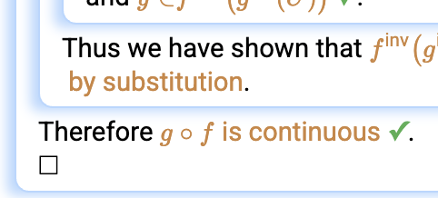
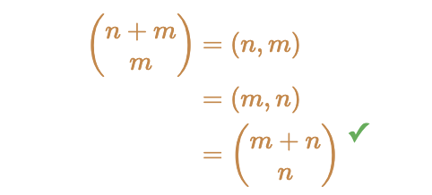
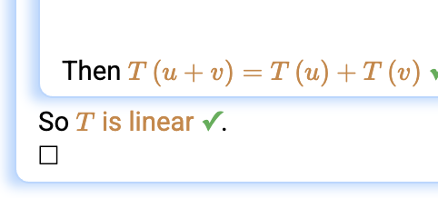
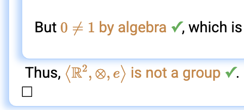
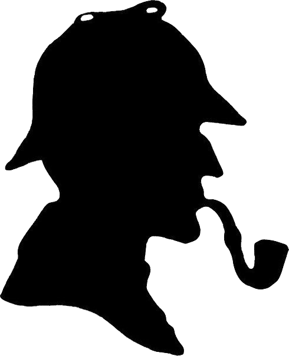

Proof Verification with Lurch Plus
Building the bridge to higher mathematics
Is my proof correct?
Lurch says it is not convinced.
I need to say more.
Anonymous, 2024
Welcome to the home of Lurch — an open source math editor that can check your proofs!
- Natural mathematical style and notation
- Completely customizable
- Designed from the ground up for ease of use
Example proof gallery
These examples show different ways Lurch can support proof writing, validation, contexts, and mathematical style.
Topo-logical
A topology proof that the composition of continuous functions is continuous.

Double induction
Verifying a binomial coefficient identity using double induction.

Linear Algebra
Three proofs involving linear transformations and subspaces.

Group Theory
A group theory example using the linear algebra context and the definition of a group.


Introduction to Mathematical Proof
Lecture notes for an introductory undergraduate course on mathematical proofs, integrated with Lurch and based on super-natural deduction. The mathematical definitions used in the course are available as Lurch contexts.
Find what you need
New to Lurch
Read the quick-start guides and start a new document in various mathematical contexts.
Students
Learn about mathematical proofs, then practice them in Lurch.
Instructors
Use Lurch in a course, adapt example assignments and mathematical contexts, or create, distribute, and grade your own.
Design and Theory
How the Lurch proof assistant works its magic under the hood.
Additional Resources
Find additional documentation, project source code, talk slides, and more.